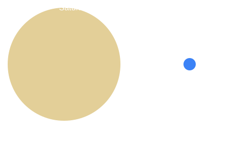

Saturn Facts
- Diameter: 116,460 km.
- Distance from the Sun: about 1.43 billion km.
- One year: about 29.4 Earth years.
- One day: about 10 hours 33 minutes.
- Cloud top temperature: about -140 °C.
- Moons: over 140, including Titan.
- It is less dense than water, so it would float in a giant bathtub.
Your Age on Saturn
Enter your age in Earth years.
How Big Is It?
